原视频：Bilibili · BV12gVs6SExQ（时长约 83 分钟） 课程：南京大学《操作系统原理》（2026）第 25 讲 · 文件系统 API（二） 整理说明：本书由视频语音转录后经 AI 重构而成，口语已转写为书面语；关键思路标注 (参考时间)，
SCREENSHOT:占位对应演示时刻。
1. 从增删改查到文件系统级 API
(参考时间: 00:00)
上一讲覆盖了文件的增删改查：mkdir、link、unlink、symlink，以及 mode / extended attributes 等元数据。这些是对单个文件或目录的一小步操作。
本讲的出发点是一个更根本的问题：文件系统本身是一个数据结构（abstract data type，给定数据与操作契约的抽象类型）。既然如此，理论就可以为它定义远超增删改查的操作——就像你在数据结构课上为集合、数组区间做 fancy 的全局操作一样。
课上规划了四条主线：
- 监控：文件系统变了就通知我；
- 快照：整棵目录树在某一时刻的样子；
- 覆盖/合并（overlay / union）：把两个目录「叠」成一个；
- 终极虚拟化：自己写代码充当一个文件系统。
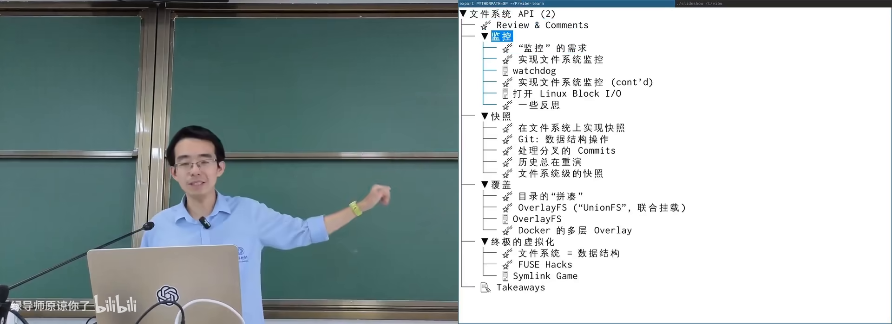
文件系统作为数据结构：监控、快照、Overlay、FUSE 四条主线在 B 站打开 (00:03:45)
2. 文件系统监控：从轮询到 inotify
(参考时间: 00:04:11)
需求：改了就告诉我
最典型场景是 Web 开发的热重载：Python/Next.js 代码改完一保存，服务自动 reload；改一个 CSS，浏览器页面立刻变色。文件管理器自动刷新、编辑器自动重载、systemd 监控 unit 文件、tail -F 等待写入，都属于同一类需求。
原则上不借助操作系统也能做：写个脚本，反复 stat（读文件元数据）对比修改时间，diff 出变化即可。
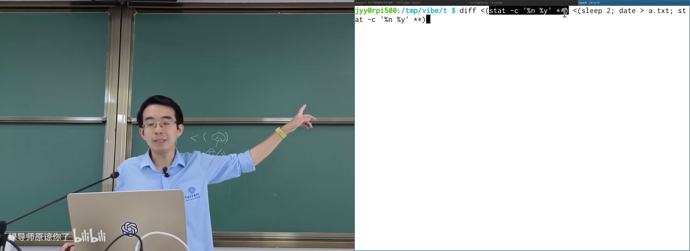
用 stat + diff 轮询检测文件修改在 B 站打开 (00:07:20)
但若目录里有几百万个文件，每次全量查询代价过高（即便有内核缓存）。更自然的模型是：事件驱动——变了就推送。
inotify：事件驱动的机制
Linux 提供 inotify（文件系统事件监控机制）：
inotify_init返回一个文件描述符（可用poll/select一起监听多个）；inotify_add_watch/inotify_remove_watch管理关心的路径；- 事件到来时读到结构体：哪个路径、什么类型（create/modify/close…）。
注意：内核的 inotify 默认不递归。库（如 Python watchdog）往往再包一层做递归。
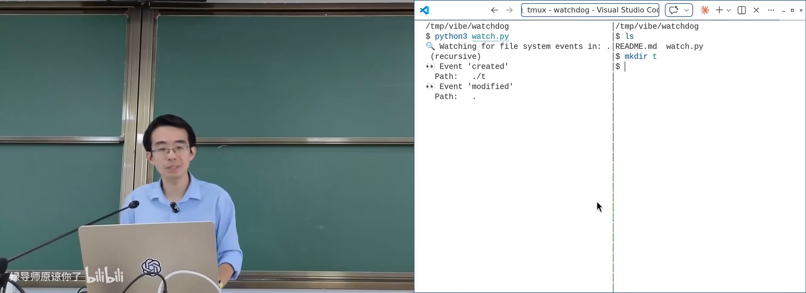
Watchdog 递归监听目录变化的演示在 B 站打开 (00:12:00)
课上演示发现一个容易忽略的细节：改文件会连带改上级目录的 mtime，但不会沿目录链一路上传——多层目录里只有直接父目录被改。
从 inotify 到「全系统可观测」
监控若从「目录里文件变了」推广到「操作系统任意状态变了」，会碰到更本质的机制。课上展示了 bpftrace 观测块设备 I/O 生命周期：谁在读、谁在写、谁在 sync 落盘。
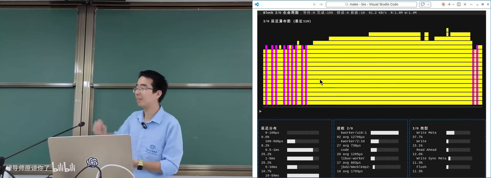
bpftrace 观测 block I/O 生命周期在 B 站打开 (00:14:00)
若你写过模拟器，可以把操作系统想成状态机（Everything is a state machine）：理论上任何状态变化都可以被观测。trace 家族：
strace：系统调用；ltrace：库调用；- inotify：文件系统事件——可视为面向文件子系统的全局 strace。
再往前一步：能否把自己写的代码插进内核钩子？这自然引出 eBPF（extended Berkeley Packet Filter，允许经校验的小程序挂到内核探针上的虚拟机机制）。
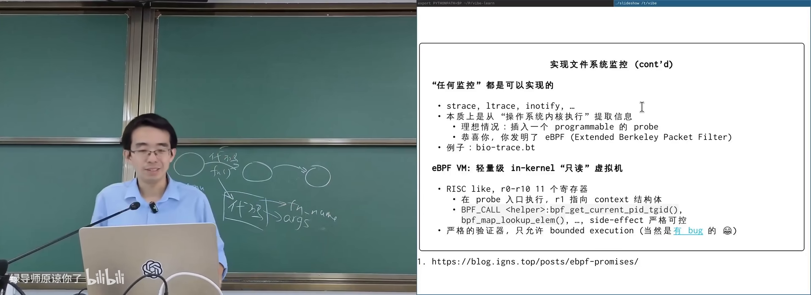
eBPF 程序：tracepoint、验证器与 helper在 B 站打开 (00:20:00)
要点：
- 字节码 + 严格验证器：禁止无界循环、限制对内核内存的写；
- 通过
bpf系统调用注入，挂到 tracepoint / hook point； - 用 BPF map（内核预实现的键值结构）做计数等统计——没法在 BPF 里随便造数据结构；
- 历史动机：网络包过滤要在内核里高效裁决，避免来回用户态的开销。
课上强调：eBPF 也不是没有 bug（生产环境中曾遇优化器误杀应执行的 printf）。但机制本身极为强大——例如捕获键盘/鼠标事件，结合 execve 等 trace，几乎可以复原你在 Linux 上的操作轨迹。
3. Specification is all you need
(参考时间: 00:26:30)
监控需求的现代答案是：先写一个功能正确但可能很慢的原型（比如反复 stat + diff），把「我想要什么」说清楚（specification，规格说明），再让模型借助操作系统现成机制（inotify、eBPF 等）做高效实现。
课上对 DeepSeek 招聘要求的解读是：在不熟悉的东西上仍能把事搞定。对系统底层能做到什么要 knowledgeable，能组合机制并写清规格；高效实现可以交给模型。还要会软件工程意义上的质量保障、幻觉应对与回滚。
更远的设想（Just-in-time systems）：将来系统本身可能根据 workload 与环境被 AI 从零合成、现场改内核，而不是永远使用人预先写死的通用内核。
4. 快照：文件系统作为持久化数据结构
(参考时间: 00:31:29)
持久化数据结构
持久化数据结构（persistent data structure，修改后旧版本仍然可用的数据结构）的经典实现思路是：append-only（只追加）+ random read（随机读）。
以二叉树插入为例：不原地改节点，而是把从根到插入点的路径拷贝一遍得到新版本 V1，未改动的子树用指针共享。这样所有历史版本都还在。
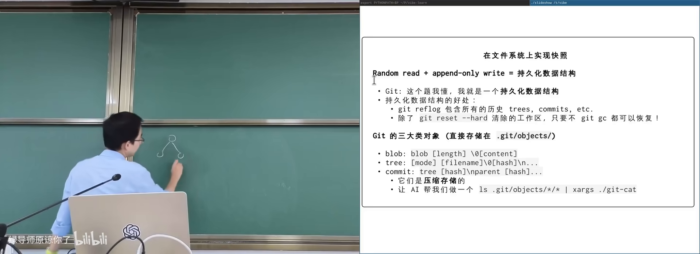
路径拷贝得到新版本：持久化数据结构在 B 站打开 (00:31:40)
Git 就是持久化数据结构
课上花了不少时间「打开 Git」：.git/objects 里只有三类对象——
- blob：文件内容（压缩存储）；
- tree：目录快照（名字、mode、指向 blob/tree 的哈希）；
- commit：提交说明、时间戳、指向 tree 与 parent。
其余几乎都是以文本形式存在的指针：HEAD、分支、stash。旧版本的 a.txt 与新版本会同时留在 objects 里。
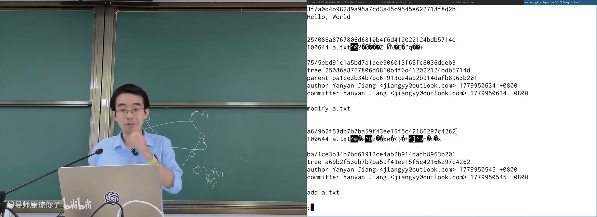
Git objects：blob / tree / commit 与文本指针在 B 站打开 (00:37:00)
分支只是「指向某个 commit 的指针文件」；merge 的标准做法是生成有两个 parent 的新 commit（三方合并：公共祖先 + 两侧 tree）；本地无分叉时可以 fast-forward。cherry-pick 把某次提交的 diff 搬到另一历史线上；rebase 则是连续 cherry-pick，把本地提交「搬到」远端之后——历史看起来更直，但会改写提交 id，冲突时可能连续撞车，需要慎用。
worktree：因为对象库 append-only，复制「工作区」几乎零成本——新目录里的 .git 只是指向主仓库 worktrees/<name> 的文本。这解决的是「单工作区 + 单 HEAD」在被多任务打断时的窘境，在 Agent 并行改同一仓库的时代又成了标配。
Btrfs：磁盘上的持久化文件系统
若把同一思想落到块设备上，就有了 Btrfs（基于 B-tree 的写时复制文件系统）：目录树、卷等都以 copy-on-write 方式更新，快照只是给当前 root 指针起个名字——ioctl 创建，几乎免费。
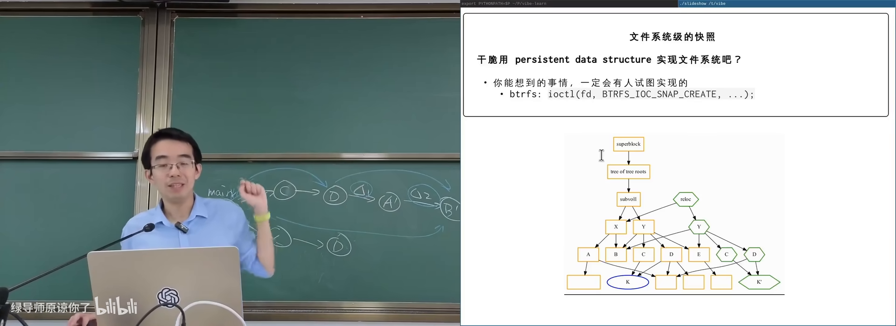
Btrfs 快照：给 root 指针命名在 B 站打开 (00:59:50)
5. Union FS 与 OverlayFS：把目录叠起来
(参考时间: 01:01:00)
upper / lower / merge
联合文件系统（union filesystem，把多个目录合并成一个虚拟目录）允许你准备：
- lower：底层，通常只读，可多层；
- upper：上层，可写；
- merge / overlay：对外呈现的合并视图。
访问规则：先在 upper 找，找不到再去 lower；都没有则不存在。Linux 通过 mount -t overlay 实现，并额外要求一个空的 work 目录给内核做临时操作。
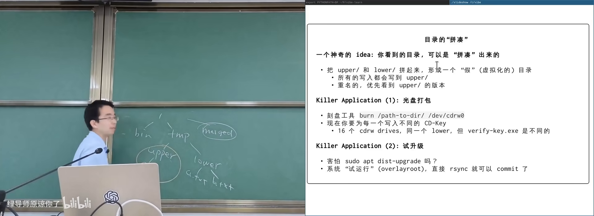
OverlayFS：upper 覆盖 lower 的查找语义在 B 站打开 (01:02:20)
演示中的关键行为：
- 在 upper 写新文件：merge 与 upper 同时可见；
- 改 lower 里已有文件：lower 本身不变，upper 里出现一份修改后的副本（写时复制）；
- 删除 lower 里的文件：lower 仍不变，upper 出现 whiteout（白色删除标记，通常是一个特殊字符设备），让 merge 视图「看不见」该文件。
这与哈希表删除需要 tombstone（墓碑）是同一类技巧。
应用场景
- 安全试错：把系统根当 lower，空 upper 做危险升级；失败则丢弃 upper，系统完好。
overlayroot一类工具可自动完成。 - 网吧 / 考试机：lower 是干净系统，每位用户/每场考试各用一个 upper；下机或换场直接换 upper。大规模竞赛管理也用同一思路隔离场次。
- Docker 分层镜像：Dockerfile 每一条
RUN产生一层；该层执行时，已有层是 lower，新写入进 upper，结束后 upper 固化为新的一层。改中间某条命令，必须从该层起重放后续步骤——所以正确做法是在顶部追加新的RUN，而不是改历史。多个容器可共享同一套 lower 镜像，各自持有 upper。
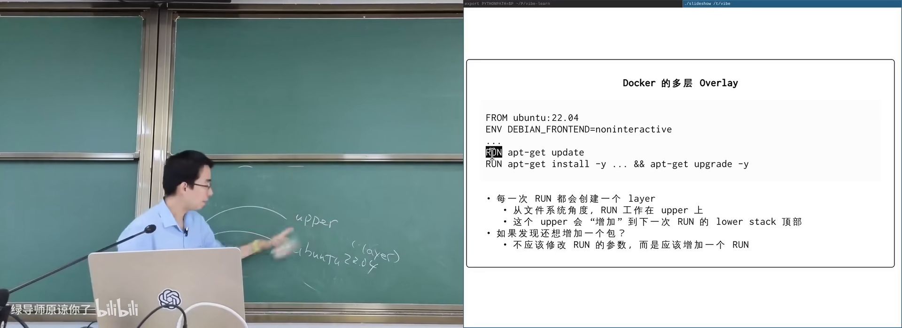
Dockerfile 分层：每条 RUN 固化一层在 B 站打开 (01:13:00)
Overlay 已不是单纯的增删改查：它改变了目录树的语义（合并视图）。
6. FUSE：自己实现一个文件系统
(参考时间: 01:16:20)
既然文件系统只是数据结构，也可以用代码直接充当文件系统。路径之一是写内核模块；更通用的是 FUSE（Filesystem in Userspace，用户态文件系统框架）：内核把 lookup/read/write 等操作转发给你实现的回调结构体。
你只需实现类似 fuse_operations 的函数表：open、read、readdir、write……返回什么完全由你的程序决定。目录树可以是虚构的，背后甚至可以没有任何磁盘文件。
课上的 GGFS（Galgame 文件系统）演示：挂载后目录里出现程序生成的文件；cat 得到内容；向某文件 write 则驱动内部状态变化，目录随之改写——游戏逻辑跑在文件系统回调里。
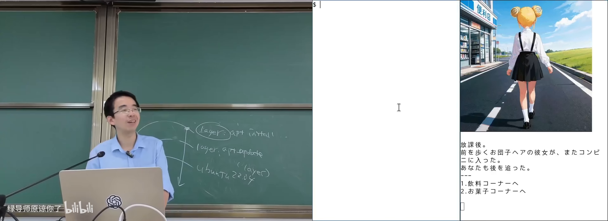
GGFS：挂载后的虚构目录与状态驱动在 B 站打开 (01:19:20)
疯狂而合理的用法还包括：
- 把 SSH 远端目录映射成本地路径；
- 把远程 Git 仓库映射成本地目录；
- 用 SQLite 等数据库持久化「文件系统」；
- 把 JSON 的 key 映射成目录、value 映射成文件（如 FF 一类项目）；
- 实现「
ls看不见、但知其名仍可cd」的隐藏目录。
这是 Everything is a file 的终极实现：只要约定好目录树与读写语义，任何东西都可以挂进文件系统。
7. 本讲小结与 AI 时代的做法
(参考时间: 01:22:20)
一句话收束：文件系统是数据结构。从增删改查出发，借助操作系统机制，可以做出监控、快照、合并视图乃至任意虚拟文件系统。
对开发者而言：
- 先知道系统能做什么（inotify、overlay、FUSE、journal……）；
- 把功能规格写清楚，哪怕原型很慢；
- 让 AI 组合机制做高效实现，自己把关质量与正确性。
flowchart LR
A["文件系统 = 数据结构"] --> B["监控 inotify / eBPF"]
A --> C["快照 Git / Btrfs"]
A --> D["合并 OverlayFS / Docker"]
A --> E["自定义 FUSE"]
B --> F["Spec 清晰 + AI 组合机制"]
C --> F
D --> F
E --> F
附录：概念补给
Abstract Data Type（ADT）
- 是什么：数据 + 在其上允许的操作，接口与实现分离。
- 课上为何出现：文件系统首先是 ADT，才能讨论「还能定义什么操作」。
- 和什么像：栈/队列接口 vs 数组/链表实现。
inotify
- 是什么：Linux 内核把文件系统变化作为事件推给应用的机制。
- 课上为何出现：热重载、文件管理器刷新等需求不该靠狂轮询。
- 和什么像：门铃 vs 每隔两秒开门看有没有人。
eBPF
- 是什么：经校验的小程序挂到内核探针上运行的框架。
- 课上为何出现：监控需求若超出文件事件，需要更通用的内核观测点。
- 常见误解：不是随便往内核里塞代码——有验证器与有界执行约束。
Persistent Data Structure
- 是什么：修改产生新版本，旧版本仍可查询的数据结构。
- 课上为何出现：快照的理论基础；Git/Btrfs 皆属此类。
- 和什么像：橡皮泥 vs 乐高：前者改了就没了，后者可以叠出历史造型。
Git objects（blob / tree / commit）
- 是什么：Git 对象库仅存内容、目录树、提交三类不可变对象。
- 课上为何出现：证明 Git「没有魔法」，只是指针与 append-only。
- 和什么像：给文件夹拍证件照（tree）+ 写明信片说明这张照（commit）。
worktree
- 是什么：同一 Git 对象库上的多个工作目录/分支检出。
- 课上为何出现：单 HEAD 难以应付多任务与多 Agent。
- 和什么像：一套底片冲多份相纸，各修各的，底片共用。
Union / OverlayFS
- 是什么：把 upper/lower 多个目录合并成一个虚拟视图。
- 课上为何出现：安全升级、考试隔离、Docker 镜像分层的共同底座。
- 常见误解：改 lower 不会真的改 lower——修改落在 upper。
whiteout
- 是什么：Overlay 删除下层文件时在 upper 留下的「已删除」标记。
- 课上为何出现：只读 lower 无法就地删文件，必须有删除语义。
- 和什么像：哈希表删除用的 tombstone。
Docker layer
- 是什么：Docker 镜像由只读层叠成，容器再加可写层。
- 课上为何出现：OverlayFS 是其文件系统侧实现。
- 常见误解：改 Dockerfile 中间步骤不会自动「热更新」上层——要重放。
FUSE
- 是什么：在用户态实现文件系统操作回调的框架。
- 课上为何出现：证明「文件系统可以就是你的程序」。
- 和什么像：把任何 API 包装成「看起来像目录」的适配器。
Specification is all you need
- 是什么：把「正确行为」写清楚，实现效率交给模型与现成机制。
- 课上为何出现：AI 时代角色从手写高效代码转向定义系统意图。
- 常见误解：规格清晰 ≠ 不需要验证与软件工程。